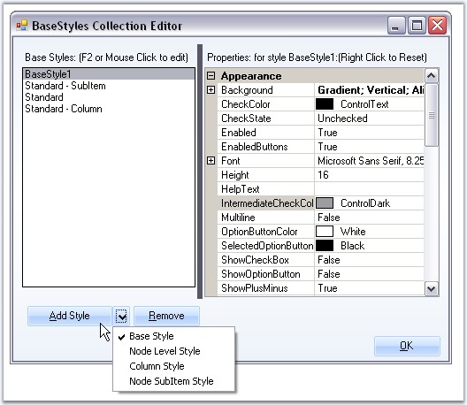
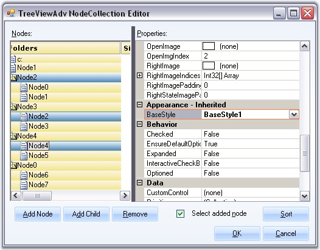
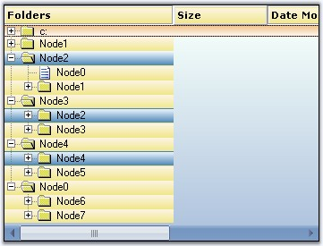

Make a Node's Style Inherit from Another Base Style
Apart from the default style (Standard Style), we can also create custom Base styles using the BaseStyles Collection Editor. Select the Base Style option, then click Add Style.

Figure 1198: Base Style option Selected
This new base style can be applied to any of the nodes, using TreeNodeAdv.BaseStyle property of the respective nodes.

Figure 1199: BaseStyle property in the TreeNodeAdv NodeCollection Editor
This overrides the Standard Style settings for the specified nodes and displays the image as follows.

Figure 1200: Node Style inherited from another Base Style
Style Settings
The below properties lets you customize the Base style settings.
|
TreeNodeAdvSubItemStyleInfo Property |
Description |
|
Background |
Sets the background for the node. |
|
CheckColor |
Indicates the check color. |
|
CheckState |
Indicates the Check state of the node. |
|
Enabled |
Specifies if the node is enabled. |
|
EnabledButtons |
Specifies if the buttons are enabled for the node. |
|
Font |
Sets the font for the node text. |
|
Height |
Sets the height for the node. |
|
HelpText |
Sets the tooltip for the node. |
|
IntermediateCheckColor |
Specifies the color of intermediate check symbol. |
|
Multiline |
Indicate whether multiline is enabled for the node. |
|
OptionButtonColor |
Sets the color of the option button. |
|
SelectedOptionButtonColor |
Sets the color of the selected option button. |
|
ShowCheckBox |
Sets the visibility of the Checkbox. |
|
ShowOptionButton |
Sets the visibility of the option button. |
|
ShowPlusMinus |
Sets the visibility of the plus / minus control. |
|
TextColor |
Sets the text color. |
|
ThemesEnabled |
Indicated if the node's controls will be themed. |
|
BaseStyle |
Specifies the base style of the node. |
|
EnsureDefaultOptionedChild |
Specifies if at least one child of the parent node should be optioned at all times. |
|
InteractiveCheckbox |
Sets the visibility of the InteractiveCheckbox for the node. |
|
ClosedImageIndex |
Indicates the imageindex for closed node. |
|
CollapseImageIndex |
Indicates the imageindex in the NodeStateImageList, when the node is collapsed. |
|
ExpandImageIndex |
Indicates the imageindex in the NodeStateImageList, when the node is Expanded. |
|
LeftImageIndices |
Specifies the ImageIndex for the left image. |
|
LeftImagePadding |
Padding for the left image. |
|
LeftStateImagePadding |
Padding for the left state image. |
|
NoChildrenImageIndex |
Indicates the imageindex in the StateImageList where node has no children. |
|
OpenImageIndex |
Indicates the imageindex for the open node. |
|
RightImageIndices |
Specifies the imageindex for the right image. |
|
RightImagePadding |
Padding for the right image. |
|
RightStateImagePadding |
Padding for the right state image. |
|
ComparerOptions |
Comparer options during sorting. |
|
Comparer |
IComparer object that compares two nodes. |
|
Culture |
Indicates the culture of the nodes during sorting. |
|
SortOrder |
Specifies the sort order of the node. |
|
SortType |
Specifies the sort type of the node. |